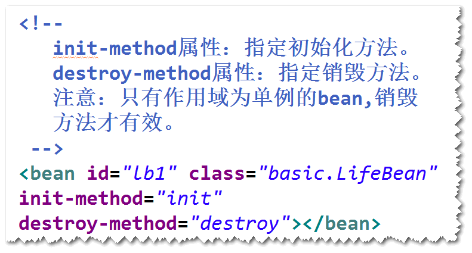

是一个开源的用来简化企业级应用开发的框架。
spring对一些常见的api（比如jdbc）做了封装，使用
这些封装之后的api,代码会大大简化。
比如，使用springjdbc来访问数据库，就不用考虑如何获取
连接，关闭连接等操作。
spring可以帮我们管理对象之间的依赖关系，这样一来，
软件更容易维护。
spring可以将一些框架集成进来，更方便使用这些框架。、
比如，可以利用spring集成mybatis（mybatis是一个用
来访问数据库的框架），这样mybatis用起来更加简单。
是spring框架当中的一个核心模块，用来管理对象。
step1. 导包。
step2. 添加一个配置文件。
step3. 启动spring容器。
step1. 为这个类添加无参构造器（或者缺省构造器）。
step2. 在配置文件当中，添加相应的配置。
step3. 启动spring容器，调用容器提供的方法来获得
要创建的对象。
a.默认情况下，容器只会创建一个实例。
b.可以设置scope属性来修改作用域。当作用域为
prototype时，会创建多个实例。
初始化方法(获取资源) 销毁方法（释放资源） 
a.默认情况下，当spring容器启动之后，会将所有
作用域为单例的bean创建好。
b.所谓延迟加载，指是的让spring容器不要创建这些
对象，只有等到调用getBean方法时才创建。
对象之间的依赖关系交给容器来管理。
容器通过调用set方法或者构造器来建立对象之间的依赖关系。
注：IOC是目标，而DI是手段。
step1. 提供相应的set方法。
step2. 在配置文件当中，使用property元素要配置
要注入的对象。